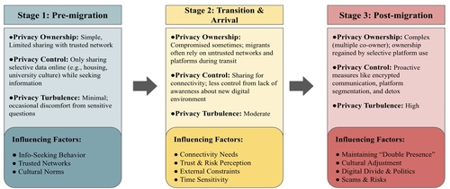
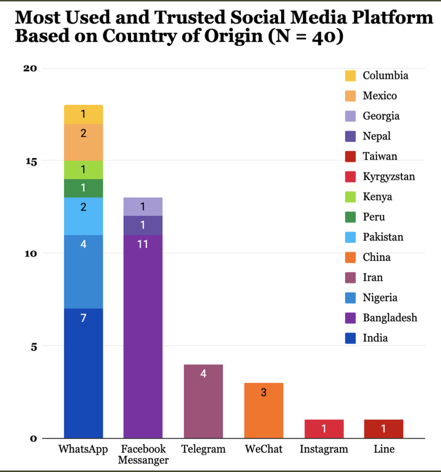
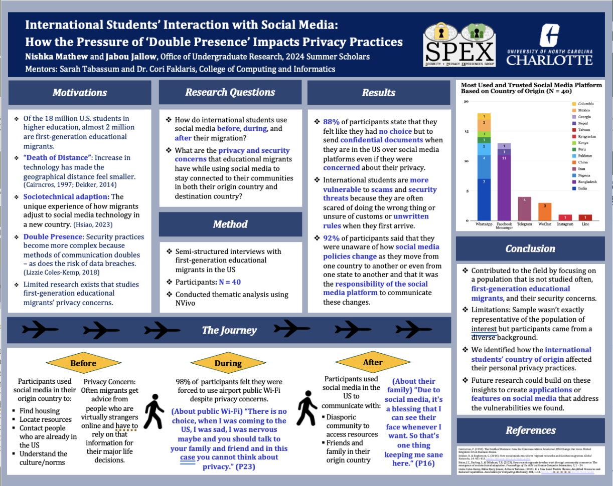
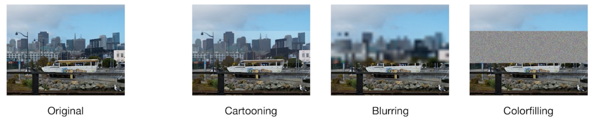
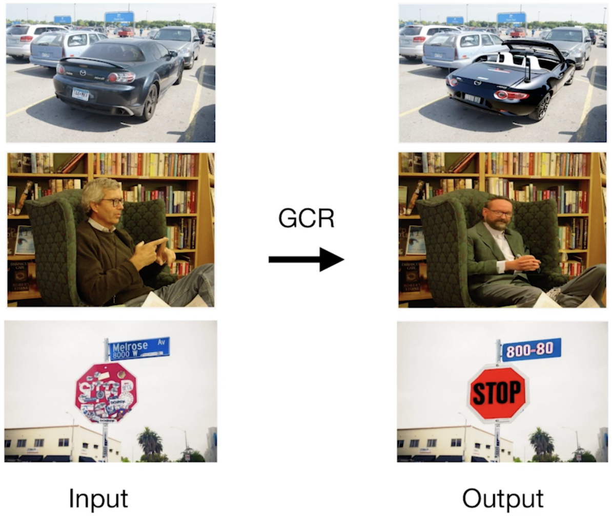

Published Research · ACM COMPASS 2025 · SPEX Lab
What happens to your sense of privacy when you cross a border, join a new country's internet, and try to stay connected to everyone you left behind, all at once?
01 — The Paper
Privacy on the Move: Understanding Educational Migrants' Social Media Practices through the Lens of Communication Privacy Management Theory is a study I co-authored with PhD student Sarah Tabassum and Dr. Cori Faklaris at the SPEX Lab. It was published at ACM COMPASS 2025.
The paper examines how educational migrants in the United States experience and manage privacy on social media throughout their migration journey. Over 1.06 million international students migrated to the U.S. during the 2022 to 2023 academic year alone. That number is large. What gets studied a lot less is what those million people are doing with their phones.
We defined educational migrants as individuals who relocate primarily for academic purposes and must navigate academic and social environments in a host country while maintaining cultural, emotional, and social ties to their home country. It is not just being in two places at once. We called it triple presence: engaging with home-country ties, local host-country communities, and diasporic communities simultaneously. Managing privacy across three audiences, on the same platforms, often with very different expectations about what should be shared, is genuinely hard.
02 — The Framework
Privacy Ownership
The sense that your personal information belongs to you and you decide where it goes.
Privacy Control
The active regulation of how that information moves across relationships and platforms.
Privacy Turbulence
What happens when those boundaries get disrupted, by a scam, an unfamiliar platform, or someone sharing something you did not want shared.
Those three concepts turned out to map almost perfectly onto the migration experience.
03 — Three Stages
We structured the research around three stages of migration and found meaningfully different privacy behaviors at each one.

Pre-migration · Transition and arrival · Post-migration
04 — What People Actually Do
WhatsApp came up constantly, across almost every country of origin, as the most trusted and most used platform. Perceived security mattered. So did the fact that everyone back home was already on it. Other platforms served more specific functions: Facebook for community groups, Instagram for maintaining a presence, Telegram for channels, WeChat for participants from China.
The platforms people trusted were almost always the ones they brought with them. Which meant that adapting to new digital environments in the host country introduced friction that went beyond just learning new apps.
One finding that stayed with me: participants reported experiences with scams, data misuse, and surveillance, often not because they were careless, but because they simply did not know the local digital landscape well enough to know what the risks were. That is not a personal failing. That is a design and education problem.

Platform trust and usage by country of origin
05 — My Role
I conducted over 25 of the 40 semi-structured interviews, with participants from more than 14 countries. I analyzed the qualitative data using inductive coding, identifying the key themes that shaped the findings. I also ran the quantitative analysis using IBM SPSS Statistics and produced the Top-Line Report with data visualizations that helped communicate the findings before the paper was written.
Working with Sarah and Dr. Faklaris on this taught me what it actually means to do rigorous research, and what it takes to get work published.
06 — The Poster

Presenting research you helped build, to a room full of people, is a different kind of understanding than writing it.
07 — Something Else I've Been Reading About
One of our participants put a sticker over his face every time he posted a photo to social media. He did not love how it looked. But he said it was worth it to keep his privacy. That stuck with me.
Last semester I started looking more closely at Human-AI Interaction and came across a study on Generative Content Replacement, a technique that uses advanced generative AI to replace sensitive parts of an image rather than simply hiding them. It felt directly connected to what our participants were doing with stickers and blurred selfies, just with significantly better technology.
Blurring
Viewers can tell something has been edited and can often still make out what is underneath.
Cartooning
Less obvious that it has been changed, but the underlying information is still readable.
Color Filling
Obviously edited, but the information is genuinely concealed.
GCR ★
The edited area looks natural, and the sensitive information is actually gone. The quadrant none of the previous methods could reach.


Three previous methods · GCR comparison
I wrote a literature review on this as part of my pivot into Human-AI Interaction and it is the kind of research direction I want to keep following.
Impact